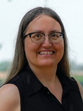

<td align="center" class="tbcolor10" colspan="2" valign="top">
<table border="0" cellpadding="0" height="100%" width="100%">
<tbody><tr><td align="right" height="35px" style="font-size:9pt">
<a href="javascript:window.close()" title="关闭本窗口">关闭窗口</a>｜<a href="print.asp?id=541518" target="_blank" title="打印本页内容">打印张贴版</a>    

</td></tr>
<tr>
<td align="center" height="500" valign="top">
<table border="0" cellpadding="4" cellspacing="0" height="100%" style="border-collapse: collapse;word-break:break-all;" width="86%">
<tbody><tr>
<td align="center" height="80px"><span style="font-family:方正小标宋简体;font-size: 25px;color: #C70E5C"><b><font color="black">讲座预告 | 科罗拉多州立大学心理学系教授Carol A. Seger学术讲座</font></b></span></td>
</tr>
<tr>
<td align="center" height="50px" style="font-size: 9pt"><font color="#808080">心理学院　2025/2/21 10:45:00</font><br/> 
<font color="#F8F8F8" style="font-size:9pt">（钟沛基 2022280095）</font></td>
</tr>
<tr>
<td height="300" valign="top">
<p class="MsoNormal" style="text-align: center;"></p><p class="MsoNormal"><b>讲座题目：</b><span lang="EN-US">Categorization in the brain:
Recent theoretical and empirical developments <o:p></o:p></span></p>
<p class="MsoNormal"><b>讲座时间：</b><span lang="EN-US">2025</span>年<span lang="EN-US">2</span>月<span lang="EN-US">27</span>日下午<span lang="EN-US">15</span>：<span lang="EN-US">00<o:p></o:p></span></p>
<p class="MsoNormal"><b>讲座地点：</b>深圳大学沧海校区致理楼<span lang="EN-US">L3-1201<o:p></o:p></span></p>
<p class="MsoNormal"><b>主讲人：</b><span lang="EN-US">Carol A. Seger<o:p></o:p></span></p><p class="MsoNormal"><b>主讲人简介：<span lang="EN-US"><o:p></o:p></span></b></p>
<p class="MsoNormal"><span lang="EN-US">Carol A. Seger </span>是科罗拉多州立大学心理学系的教授，专注于认知心理学和行为神经科学领域的研究。她于<span lang="EN-US">1994</span>年在加州大学洛杉矶分校（<span lang="EN-US">UCLA</span>）获得心理学博士学位，并在斯坦福大学完成了博士后培训。她的研究兴趣广泛，涉及类别学习、习惯形成、基底神经节的功能、以及神经影像学等多个领域。<span lang="EN-US"><o:p></o:p></span></p>
<p class="MsoNormal"><span lang="EN-US"><o:p> </o:p></span><span lang="EN-US">Seger</span>教授在学术界拥有丰富的经历。自<span lang="EN-US">2010</span>年起，她在科罗拉多州立大学担任教授，并曾担任分子、细胞和整合神经科学项目的主任（<span lang="EN-US">2016-2020</span>）。此外，她还在中国华南师范大学担任客座教授（<span lang="EN-US">2014</span>年至今），并担任<span lang="EN-US">SCNU-CSU</span>国际心智与脑研究实验室的联合主任。她还曾担任知名学者讲座教授（<span lang="EN-US">2015-2017</span>），并获得中国教育部的<span lang="EN-US">“</span>外国专家引进奖<span lang="EN-US">”</span>（<span lang="EN-US">2014</span>年）。</p>
<p class="MsoNormal"><span lang="EN-US"><o:p> </o:p></span><span lang="EN-US">Seger</span>教授的研究成果丰硕，发表了大量高影响力的论文，涉及类别学习、反馈处理、神经影像学等领域。她的研究不仅关注成人的认知过程，还涉及儿童和青少年的学习机制。她的论文发表在《<span lang="EN-US">Journal of Neuroscience</span>》、《<span lang="EN-US">Memory &amp;
Cognition</span>》、《<span lang="EN-US">Brain and Cognition</span>》等顶级期刊上。她还获得了多项荣誉，包括<span lang="EN-US">2015</span>年的<span lang="EN-US">“</span>知名学者讲座教授<span lang="EN-US">”</span>奖、<span lang="EN-US">2013</span>年成为心理科学协会（<span lang="EN-US">APS</span>）会士，以及<span lang="EN-US">2010</span>年《<span lang="EN-US">NeuroImage</span>》杂志的系统神经科学最佳论文奖。</p>
<p class="MsoNormal"><span lang="EN-US"><o:p> </o:p></span><span lang="EN-US">Seger</span>教授的研究得到了多项资助，包括美国国家心理健康研究所（<span lang="EN-US">NIMH</span>）的资助，研究课题涉及人类分类学习中的皮质<span lang="EN-US">-</span>纹状体网络。她还与中国华南师范大学合作，建立了<span lang="EN-US">SCNU-CSU</span>联合国际实验室，致力于心智与脑的研究。</p>
<p class="MsoNormal"><span lang="EN-US"><o:p> </o:p></span>总的来说，<span lang="EN-US">Carol A. Seger</span>教授在认知心理学和神经科学领域具有深厚的学术背景和丰富的研究经验，她的工作对理解人类学习、记忆和决策的神经机制做出了重要贡献。</p><p class="MsoNormal">欢迎感兴趣的师生参加！</p><p class="MsoNormal" style="text-align: right;">深圳大学心理学院</p><br/></td>
</tr>
<tr><td height="0" style="font-size: 9pt"></td></tr>
<tr><td align="right" style="font-size: 9pt">撰稿：俎亚男　审核：张丽  <br/> </td></tr>
</tbody></table>
</td>
</tr>
</tbody></table>
</td>
